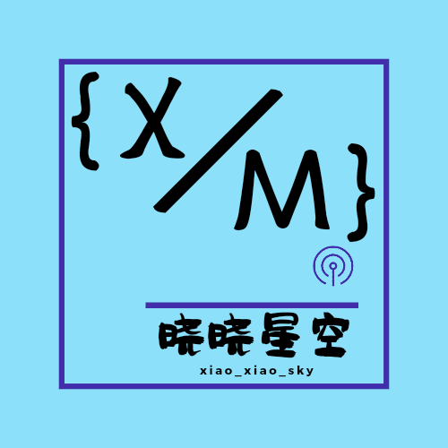

习物志

我们是一支充满激情和创造力的科技团队，致力于解决复杂的技术问题和推动创新。我们的团队由一群拥有丰富经验和专业知识的技术专家组成，擅长于以下领域：
1. 技术专长：
我们在C/C++、Java方面拥有深厚的专业知识和经验。我们熟悉最新的技术趋势和发展，并能够应用它们来解决复杂的问题。
2. 团队合作：
我们的团队注重合作和协作，每个成员都具备良好的沟通和团队合作能力。我们相信通过共享知识和经验，我们能够共同解决复杂的问题，并提供最佳解决方案。
3. 创新精神：
我们鼓励团队成员保持创新精神，并不断追求技术的突破和创新。我们鼓励团队成员提出新的想法和解决方案，并为他们提供支持和资源，以实现他们的创意和潜力。
如果您正在寻找一支富有经验和创新精神的科技团队，我们愿意与您合作，共同解决技术挑战并实现业务目标。请与我们联系，了解更多关于我们团队的信息和我们能为您提供的服务。